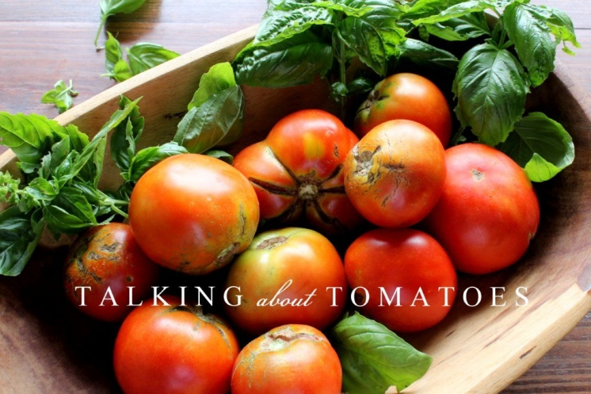

.png)
.PNG)
.PNG)
.PNG)
.PNG)
.PNG)
.JPG)
.JPG)
.PNG)
.PNG)



Yes, the weekend is about over, but I wanted to get this weekend wandering post out for you. Do you have a large crop of tomatoes ready to be picked right now? My father-in-law’s garden has an abundance. Lucky for us (and many other people) he generously shares his produce with everyone. You know, it is bad being deathly allergic to shellfish, but I think it would be even worse to be allergic to tomatoes! So many wonderful dishes are made with them.
Southern Living has a webpage full of assorted recipes using them here, including this yummy looking tomato tart.
Williams Sonoma has a tomato basil tart recipe at their site, here.
And they, too, offer a number of tomato recipes from which to choose here.
Don’t all of those look delicious?!
And here is one more tart…a tomato-ricotta tart at a Hungarian blog. There is a translator for you there.
One of my friends made some mouthwatering Caprese skewers with tomatoes for a Christmas party here last year. Here is a recipe for them you might want to try. My friend also used a balsamic vinegar on the tomatoes and basil for an added punch of flavor as they do in this recipe.
Or maybe you are more in the mood for a salad. How about this cucumber and heirloom tomato one from Foster’s Market? If you have a big crop of cucumbers ready now, this would be perfect. Besides the delicious taste, it is a gorgeous dish, too.
If you have a large crop of ripe tomatoes ready now, you are probably not wanting to pick any green ones from the vines, but fried green tomatoes are so good. Paula Deen has a video showing how to make them here. I really like that she uses flour in this particular recipe rather than the traditional (and heavier) cornmeal.

She also uses them in this recipe on….hamburgers!
How about an entire tomato menu at a tomato tasting party? That sounds like one party I would love!
These little tomato pies are cute and look like they would taste fantastic.
Those little pies were served at a meal with this GORGEOUS centerpiece. Maybe you can use many of your tomatoes to recreate something like this? (meal and all. :))
The smell of all those tomatoes would be divine! We were in a Williams Sonoma shop this weekend, and they had a tomato candle on sale. It really did smell like tomatoes!
A few years ago they carried a hand soap and lotion that smelled like them, too. I thought it was a little strange to want to smell like tomatoes. (Apparently others thought the same thing because they no longer carry them.) But deep in the cold of February, the smell of summer tomatoes might be a good thing. 🙂
Besides smelling and tasting good, I think tomatoes are visually appealing. (Of course, I would. They’re red!) Take a look at this serving dish:
Can’t you see it being perfect for serving an Italian pasta dish? Or how about these? I don’t think I would really want the entire set, but a few of the pieces would also be good for a meal where a tomato dish is served. (Unfortunately, Kohl’s has discontinued carrying the pattern.)
Now take a look at this tomato tea towel. Isn’t that a thing of beauty?!
Even this simple art canvas would look great in a kitchen or dining area.
And speaking of art, when I saw this seed kit from Williams Sonoma, I thought the packets themselves would look wonderful matted and framed. (I know you are supposed to buy them to plant, but the artwork was too beautiful to overlook!)
And finally, here is a recipe I make when we have used tomatoes in more than enough salads and sandwiches . Even my children who don’t normally like tomatoes like this simple dish.

It is really an easy dish…cut the tomatoes. Top with butter, sprinkle salt and paper on them, add a few pieces of basil.

Bake them for 20 minutes. Sprinkle Parmesan cheese on top when you take them out of the oven, and add a few more pieces of fresh basil. Serve warm.

It is a delicious and easy dish. You can’t get much better than that. I hope your weekend was a good one, and I hope you can find something here to use all your wonderful summer tomatoes in. Happy cooking (and eating!)
until next time…


.PNG)
Yum! I love tomatoes in season! My plants aren’t exactly floriferous this year however!
—————————————————————————–
Floriferous? That will have to be my new word of the day, Cindy. 🙂 I have never heard that term before, but I can tell what it means. I hope your tomato crop improves this summer. Good luck with it!
Kelly
Kelly- What a great post. I used to LOVE a tomato tart but haven’t had one in years. My mother used to make something called scalded tomatoes that had a cream base and it was so very good. Loved this post- xo Diana
——————————————————————————
Diana, I don’t believe I have ever heard of scalded tomatoes. That’s a new one for me! I will have to look in some old cookbooks I have to see if there might be a recipe for them. Thank you for introducing me to something new for my beloved tomatoes!
I am glad you enjoyed the post.
Kelly
Thanks for the wide view of tomatoes and how the use them! I tried Martha Stewart’s recipe for oven dried tomatoes a couple of years ago. They were fabulous. A bit time consuming, but definitely a tasty way to preserve an over abundant crop!
——————————————————————————
I have never done oven drying of tomatoes, Terri. So I will have to check out Martha’s recipe. Sounds like a smart way to deal with so many of them. Plus we love the flavor of sun-dried tomatoes when used with goat cheese on practically anything. I would think the oven dried ones would be similar. Thanks for the idea!
Kelly
Love this post, my mouth is watering! Many (15 ? ) years ago, when I worked at a nursery, we got seed packets that the company brought out from their archives. They were soo graphic and artistic, I bought some and Mod Podged them to small plaques to hang in my kitchen. They sit in a drawer now, I can’t part with them.
——————————————————————————-
So I am not the only one to go all artsy with the seed packets! Yay! What a smart idea to make plaques out of them. You would probably like the seed packets at Blackberry Farm. Although not as colorful, they certainly have an old vintage look. You can check them out here: http://www.blackberryfarm.com/shop/farmstead/seeds
Kelly
My tomatoes are just starting to ripen a bit. I have cherry tomatoes that have given me a taste of heaven (just yesterday, in fact). My beefsteaks have a ways to go though. I am the only one in my family who really loves them though! I can’t wait to have them at every meal!!!!!!
On another note –I love the tomatoes in the centerpiece – and I have now found a use for those purple-y green “things” that are in there with the tomatoes. They grow all over the place here (I have done serious battle with them in my garden). Having a use for them will be kind of nice!
——————————————————————————
Wow, the only one in your family? You can REALLY hog them all to yourself, can’t you Megan?! That centerpiece is gorgeous. I hope you can create something like it with your purple green things! 🙂
Kelly
I’m weird, I know, but I never have really liked tomatoes. I do love all the different ways you used them. Opens up some possibilities for other fruits and veges to be used around the house. Thanks for the inspiration.
——————————————————————————-
Aw Jane, that doesn’t make you weird. Two of our three children don’t like tomatoes! (I don’t know how they could possibly be our kids though, since both my husband and I could eat tomatoes for every meal.) You can just stick to the tea towel or candle in your appreciation of them, then. (Now if we were talking about carrots…I would be in the same boat as you with not liking a food. No carrots here!)
Kelly
Kelly,
I too love tomatoes! We just picked our first two romas from the garden last night! I love to make a dip (from Pinterest)with romas, evoo, feta cheese, greek seasoning and green onions. I serve it with thinly sliced french baguette. Thanks for sharing all of the recipes and inspirational tomato dishes, towels, prints and seed packets. What fun stuff!
———————————————————————————
Dawn, your recipe sounds great! Anything with cheese, tomato, and bread would have to be good. Glad you liked all the tomato things!
Kelly
What a great post! Such lovely photos of all things tomato! The recipe at the end looks so simple but delicious. My favorite tomato recipe is Barefoot Contessa’s Roasted Tomato Caprese. Thanks for sharing!!!
—————————————————————————–
Thank you, Sandy! Anything from the Barefoot Contessa cookbooks is yummy, so I know that recipe would have to be a good one. I am going to go look for it now. Thanks for the recommendation!
Kelly
Kelly,
I love tomatoes and home grown tomatoes are the best! I miss having a regular source. I don’t have any friends or family growing tomatoes this year. Some of these recipes looks great. I may have to make a tomato tart this summer.
Thank you.
Karen
——————————————————————————-
Gosh I wish I could get some of these to you, Karen. (But California is a looooooong way from Georgia.) I hope you get to try a tart with some fresh ones. The one with the basil sounded delicious to me. You just can’t beat that combination of tomatoes and fresh basil.
Kelly
Love those tomatoes! So beautiful— there is just something “homey” about them! My favorite way is to go into the garden, pick a small ripe one, wipe it off and sprinkle it with a little salt! I’ve actually seen my dad carrying his salt shaker and going to the garden and do this my whole childhood! My grandmother used to fix stewed tomatoes with saltine crackers broken into them with a little bacon grease and sweetened to taste! Can you believe I had never had Tomato Caprese until last year!? Had never heard or seen it before– coming from one who reads recipe books as a hobby! Enjoyed your post so much. Craving that smell right now!:) thanks for the memory!
——————————————————————————
Aren’t they beautiful, Louvina?! What a super fresh way to enjoy a tomato..right in the garden. I would need to add pepper to it also to get the best flavor. 🙂 I have had that tomato stew with the crackers that you are speaking of. Very delicious! And no, I cannot believe a cookbook reader like yourself had not had Caprese until last year. Where in the world have you been to miss such a simple treat?! If you are craving that smell, you need to go right now and get some fresh tomatoes or get the candle from Williams Sonoma.
Kelly
I love tomatoes and am blessed with a husband who likes to grow them. We can’t get enough. I can eat them like an apple. 🙂
We eat an abundance of bruscetta and I’ve a recipe for tomato pie that makes an amazing dinner.
Great post – as always! (and the tomato themed kitchen items are just darling!)
——————————————————————————
I believe you are a TRUE tomato lover, Talia if you can eat one like an apple. 🙂 A tomato pie is something I am going try this week. So happy you liked the post. I liked all the kitchen things, too. They would be perfect at this time of year!
Kelly
Beautiful tomato post and very timely as I have an abundance of tomatoes on hand at the moment. Tomato tart with fresh basil sounds great for dinner, tonight! Thanks for the inspiration!!
—————————————————————————–
This is definitely our time of year for tomatoes. I am so glad you could get some inspiration from today’s post Rhonda! Make an extra tart for me and send it over. This tomato lover would be more than happy to help you eat it!:)
Kelly
Kelly I had a delish tomato pie at one of our local restaurants over the weekend. They marinate their tomatoes in balsamic vinegar before putting them in the pie and it was so yummy. Nothing like a good ripe fresh tomato!!
——————————————————————————
That does sound VERY delicious, Arlene! The balsamic vinegar would really change up the flavor. I love it on the bruschetta at Mellow Mushroom. You are so right about there being nothing like a good ripe fresh tomato…especially in the summer.
Kelly
Hi Kelly, love this post all about the tomatoe. From eating it to decorating….love it! Not sure about the candle, but I love the little towels. Happy summer!
—————————————————————————–
I thought that towel was pretty enough to frame or use for making a throw pillow. Not only were the illustrations gorgeous, but I loved the lettering there, too. I think that tomato candle might work for a scent in the kitchen or out on the porch, but I would not put it anywhere else. I bought a grapefruit scented one the other day, and the entire house smells so fresh when I burn it. Happy summer to you too!
Kelly